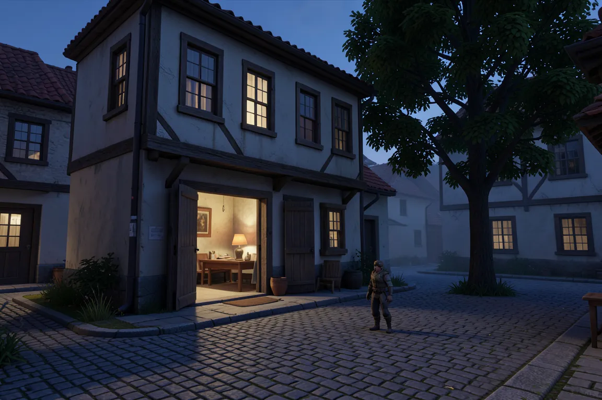

Материалы подчиняются физике: альбедо, шероховатость и металличность отвечают одной модели света, поэтому дерево, камень и металл выглядят верно при любом освещении. Сканированные поверхности, глобальное освещение и трассированные отражения приближают игровые миры к архитектурным визуализациям.

Главная идея
Если каждый материал подчиняется одной физике света, мир выглядит настоящим под любым углом и в любой час.
Принципы дизайна
Создавайте каждый материал как альбедо, шероховатость, металличность и нормали в калиброванных диапазонах.
Берите сканированные или измеренные поверхности для камня, дерева и ткани.
Освещайте в физических единицах: солнце в люксах, лампы в люменах, настоящее небо.
Используйте глобальное освещение, чтобы свет отражался между поверхностями.
Грейдите кадр кинематографической тональной кривой, без тяжёлого цветового оттенка.
Добавляйте мелкие несовершенства: пыль, разводы, неравномерный износ.